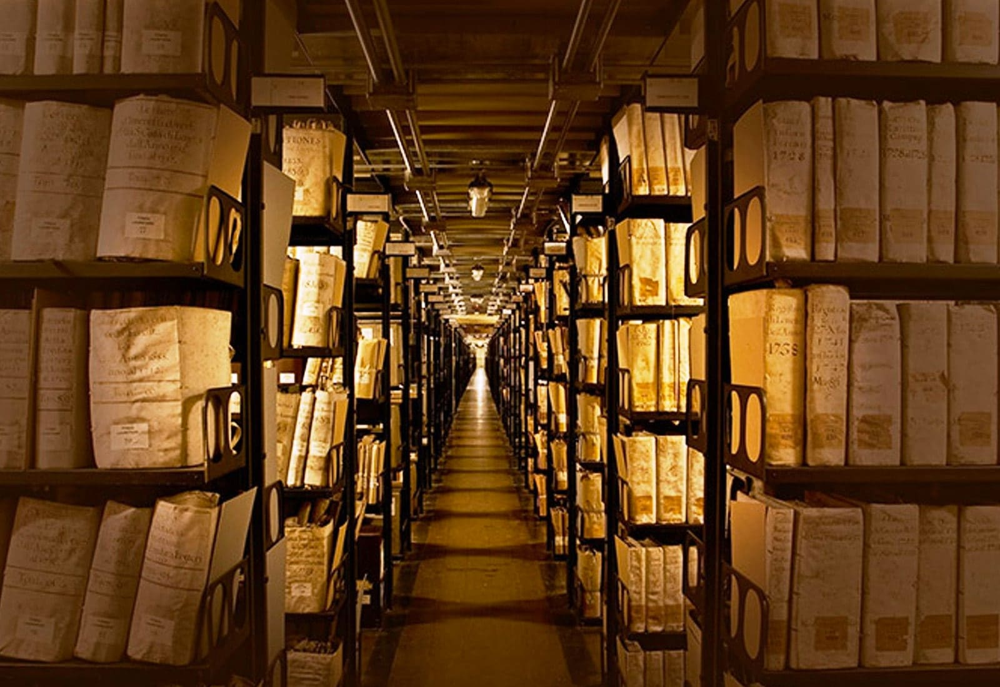

1. Area 51 - A titokzatos katonai bázis
Az egyik legismertebb titkos zóna a híres Area 51, az Egyesült Államok Nevada államában található katonai létesítmény. Az 1950-es évek közepén alakult meg, és azóta számos összeesküvés-elmélet és titokzatos esemény kapcsolódik hozzá. Az amerikai kormány hivatalosan is titokban tartja, mi történik az itt végzett kutatások során, de a területet leginkább az UFO-kkal és földön kívüli élettel kapcsolatos elméletek miatt ismerik világszerte.
A bázist a nyilvánosság előtt teljes mértékben elzárják, és a terület légterét is szigorúan őrzik, ezért a civil látogatók számára teljesen elérhetetlen. Az Area 51 környékét ismerhetjük meg a híres „extrém túrák” során, melyek során a turisták próbálnak a bázis közelébe jutni, de a biztonsági őrök és a katonák gyorsan eltávolítják őket, ha túl közel merészkednek a területhez.
2. Chernobyl - Az atomkatasztrófa nyomai
A csernobili atomerőmű, Ukrajnában, a történelem egyik legnagyobb nukleáris katasztrófájának helyszíne. 1986-ban történt itt egy súlyos baleset, amely óriási radioaktív szennyeződést okozott, és hatalmas területet tett lakhatatlanná. A baleset után a környéket - Csernobil városát és a Pripjaty városrészt - teljesen evakuálták, és több évtizedre elzárták a külvilág elől.
Ma, több mint három évtizeddel a katasztrófa után, Csernobil és környéke egy olyan különleges területté vált, amelyet csak bizonyos engedéllyel látogathatnak az érdeklődők. Az „Exclusion Zone” (Kizárt Zóna) néven ismert terület szigorú szabályokkal van körülvéve, és minden látogatónak hivatalos túravezetővel kell bejárnia a zónát.
3. North Sentinel Island - Az elzárt törzs titkai
A világ egyik legzártabb helye a North Sentinel Island, amely az Andamán-szigeteken található, India partjaitól délre. Az itt élő Sentinalese népcsoport évszázadok óta elzárkózik minden külvilágtól, és rendkívül ellenségesek azokkal, akik megpróbálnak kapcsolatba lépni velük. A Sentinalese emberek soha nem voltak érintkezésben a modern világgal, és úgy tűnik, hogy mindenféle technológiai fejlesztés nélkül, a saját hagyományaik és életmódjuk szerint élnek.
Az indiai kormány szigorúan védi a szigetet és az ott élő embereket, és a törzs védelmére törvények vonatkoznak, amelyek megtiltják a sziget látogatását. Azok, akik megpróbálják elérni a szigetet, gyakran szembesülnek a törzsi tagok agresszív reakcióival, akik kőbaltákkal és íjakkal próbálják elűzni az inváziót.

4. Vatican Secret Archives - A Vatikáni Titkos Archívumok
A katolikus egyház szívében, a Vatikánban található a világ egyik legismertebb titkos gyűjteménye, a Vatican Secret Archives (Vatikáni Titkos Archívumok), amely több mint 12 kilométeres polcot jelentő történelmi dokumentumot tartalmaz. Az archívumok olyan egyházi és politikai iratokat őriznek, amelyek rendkívül értékesek a történelem kutatói számára.
Bár az archívumot hivatalosan kutatók és tudósok számára elérhetővé tették, hozzáférésük szigorú feltételekhez van kötve, és a látogatók is csak a kifejezetten engedélyezett dokumentumokhoz férhetnek hozzá. A Vatikáni Titkos Archívumok tehát nemcsak vallási, hanem történelmi szempontból is kulcsfontosságúak, és bár az egyházi iratok kutatásához való hozzáférés nem könnyű, a titkok és rejtélyek mind a mai napig fennmaradnak ezen a helyen.
5. Sakhalin szigeti Zóna - A nukleáris fegyverek kísérleti helyszíne
Az oroszországi Sakhalin szigetén található egy olyan zárt terület, amelyet egykor a szovjetek nukleáris fegyverek tesztelésére használtak. Ma már a területet az orosz kormány szigorúan őrzi, és nem engedélyezett a civil látogatás. A sziget egyes részei, ahol korábban atomrobbantásokat végeztek, ma is veszélyesek lehetnek, és csak a legszigorúbb engedéllyel látogathatók.